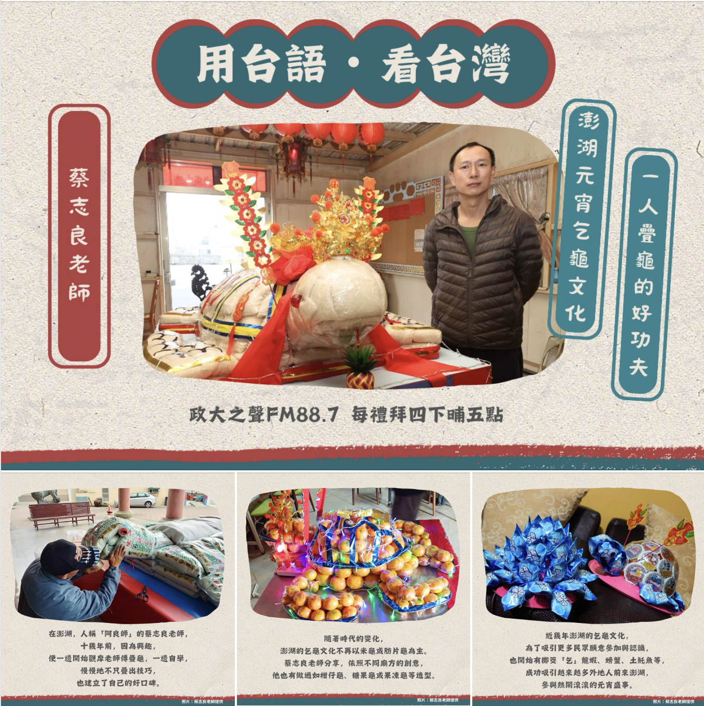

📌 本週主題
澎湖元宵乞龜文化 一人疊龜的好功夫
🎧 內容簡介
- 🏮正月玩三天 上元玩三暝🏮
- 你知道什麼是乞龜嗎？
早期，澎湖人多從是農業或捕魚工作，生活環境不如現在富裕，
因此廟宇會使用糯米、麵粉等，做成象徵長壽平安的「龜」型糕點，
供民眾擲筊，將糕點帶回享用，以乞求平安與豐收，
澎湖因而盛行「乞龜」活動。
另有一說，為早期出海捕魚是有風險的工作，因「龜」與「歸」同音，因此乞龜，又有乞求「平安歸（龜）來」之意。不論哪種說法正確，
乞龜活動是澎湖農曆年後一大盛事，每間廟都會推出各式各樣的活動，例如：乞龜、猜燈謎、夜市攤或乞龍蝦等
每年皆吸引許多澎湖人及外地遊客共襄盛舉！
這一集邀請澎湖疊龜的師傅——蔡志良老師，
與我們分享澎湖乞龜的文化，以及疊龜這項技藝✨
請聽眾朋友跟著主持人文馨的腳步，又一遍來去澎湖囉！